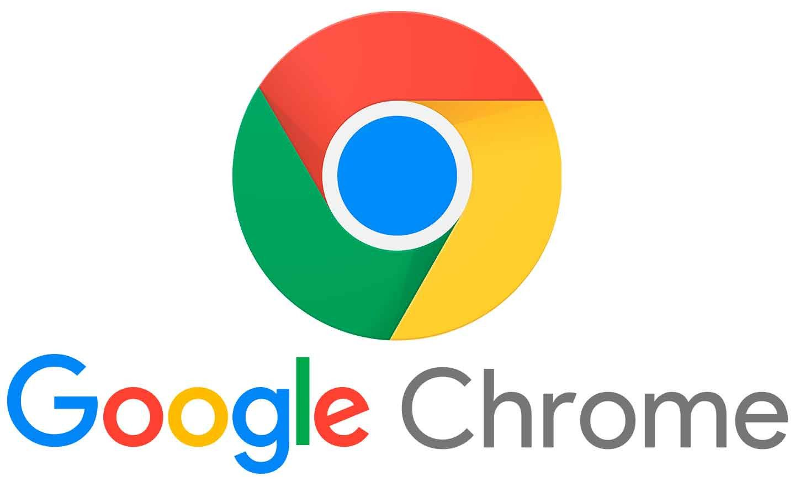
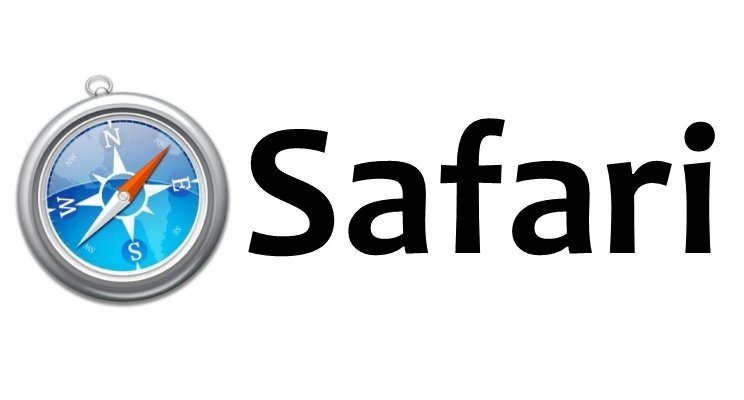

Es de vital importancia contemplar los distintos navegadores con los que los usuarios van a utilizar nuestras páginas. En teoría, los estándares web publicados por el W3C deberían permitir que las páginas fueran visualizadas exactamente igual en todos los navegadores. La realidad, sin embargo, es distinta: Cada navegador (especialmente, Internet Explorer) implementa diferencias que pueden hacer necesario el uso de técnicas "especiales" para que nuestros portales se muestren de la misma forma en todos los navegadores.
Es un navegador web de código propietario desarrollado por Google y compilado con base en componentes de código abierto (proyecto Chromium).
Chrome es actualmente el navegador más utilizado de internet, y el 59% de los usuarios de Euskadi.eus utilizaron este navegador durante el año 2019. Está disponible gratuitamente para diversas plataformas (Windows, MacOS, Android, iOS, Linux...).
El navegador Google Chrome se basa en el proyecto de navegador web de código abierto Chromium . Google lanzó Chrome en 2008 y publica varias actualizaciones al año.

Es un navegador web de código cerrado desarrollado por Apple Inc. Está disponible para Mac OS X, iOS (el sistema usado por el iPhone, el iPod Touch y el iPad) y Microsoft Windows.
Ofrece excelentes opciones de personalización, potentes funcionalidades para proteger la privacidad y una duración de la batería líder en la industria para que puedas navegar como quieras todo el día.

Es un navegador web libre y de código abierto descendiente de Mozilla Application Suite y desarrollado por la Fundación Mozilla. El 10% de los usuarios de Euskadi.eus utilizaron este navegador durante el año 2019.
Firefox puede ser utilizado en varios sistemas operativos (Windows, MacOS, Android, iOS, Linux...).
Firefox soporta completamente los estándares HTML5 y CSS3.